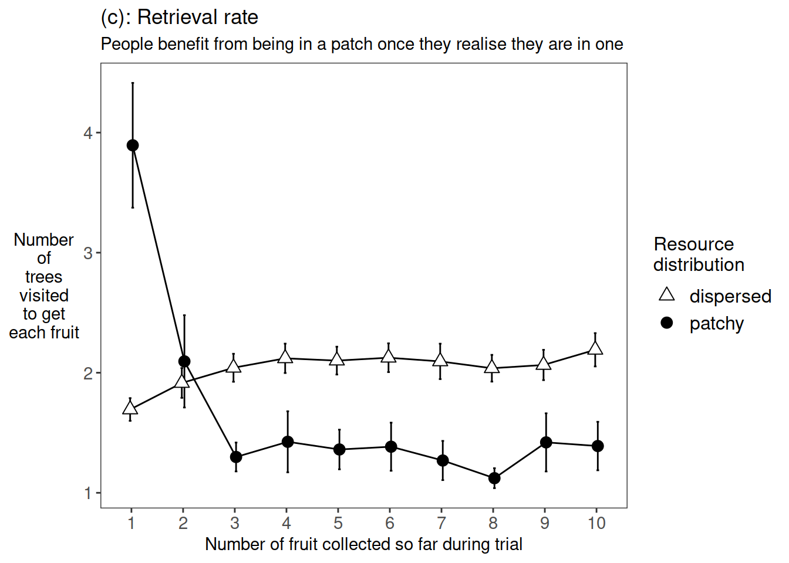

Chapter 7 Master plot, e1
pd <- position_dodge(0.1)
my_fgms_theme = theme_bw()+
theme(
panel.grid = element_blank(),
axis.title.y = element_text(angle=0, vjust=0.5, hjust=0.5),
legend.text = element_text(size=12),
legend.title = element_text(size=12),
axis.text = element_text(size=11),
strip.background = element_blank(),
strip.text = element_text(size=11)
)retrieval_data <- readRDS("e1_retrieval_plot_data.rds")
p3=ggplot(data=retrieval_data, aes(y=mu, x=fr, group=rr, fill=rr, shape=rr))+
labs(title="(c): Retrieval rate", subtitle="People benefit from being in a patch once they realise they are in one")+
ylab("Number\nof\ntrees\nvisited\nto get\neach fruit")+
xlab("Number of fruit collected so far during trial")+
my_fgms_theme+
scale_fill_manual(name="Resource\ndistribution",values=c("white", "black")) +
scale_shape_manual(name="Resource\ndistribution",values=c(24,19)) +
stat_summary(fun.data = mean_cl_normal, geom = "errorbar", width=0.1, position=pd) +
stat_summary(fun = mean, geom = "line", position=pd) +
stat_summary(fun = mean, geom = "point", size=3, position=pd)p3
pp=(p1+p2)/p3/p4 +
plot_layout(heights = c(1, 1, 1), guides="collect") +
plot_annotation(title = 'Figure 2: Experiment One measures')
ggsave(plot = pp, filename="e1-99-master_plot.png",height=12,width=9)